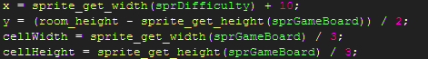
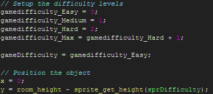
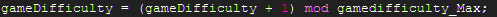

Tutorial
Page 5 of 7
Scripts : Completing the Infrastructure
We're now going to add the remaining scripts that represent the infrastructure of the game before we move onto the main grunt
work that runs the game and interacts with the player.
In the Scripts hierarchy right click on BoardLayout and add a script scrBoardLayoutInit. To this script add the following code:

Note how we're using the game assets to define the layout of the room rather than hard-coding values. This allows us to change
the assets without necessitating changes to the code. Whilst there is often a case for avoiding premature generalisation, simple
steps like these can prevent us from being coupled to a specific set of assets. We are, however, hardcoding the gap used to
separate the game grid from the difficulty setting object.
Next, add the scripts scrGameDifficultyInit, scrDifficultySelected and scrDifficultyDraw to the GameDifficulty
group in the Scripts hierarchy.
For the game difficulty object scripting we're going to introduce a way of enumerating values that means we can alter the settings
of the game without having to alter code in multiple places that use these values. This is similar to an enum using C/C++/C#.

The enumerations are gamedifficulty_Easy/Medium/Hard and we also define a variable gamedifficulty_Max that we can use in for loops
to run through the various difficulty settings available. Note that the values chosen for the difficulties matches up with the subimages
of the sprite used for this object: sprDifficulty.
The variable gameDifficulty is used throughout the code to control the difficulty setting that is in use.
Finally, add the code for scrDifficultySelected

and scrDifficultyDraw
Click on the Next button to go to the next page of the tutorial.